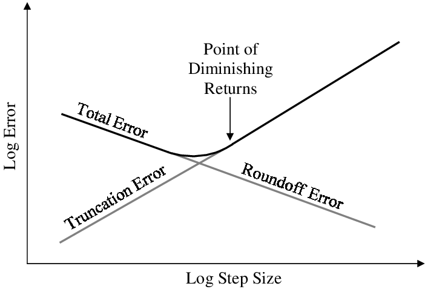
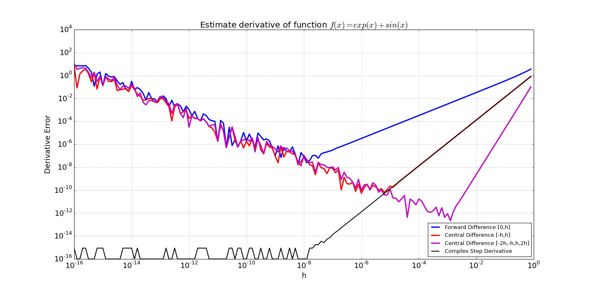
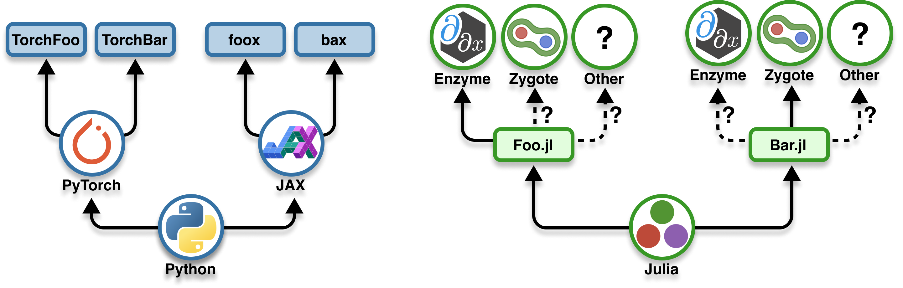
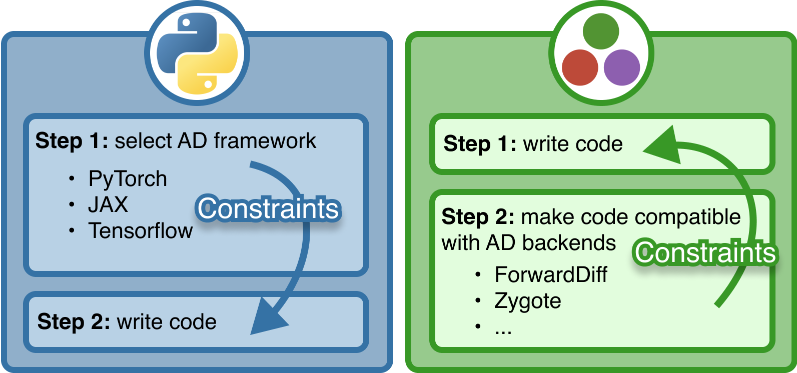

@show eps(1.0)
@show eps(0.1)
@show eps(0.01);eps(1.0) = 2.220446049250313e-16
eps(0.1) = 1.3877787807814457e-17
eps(0.01) = 1.734723475976807e-182025-04-01
Part of this lecture is based on GDalle’s lecture on algorithmic differentiation.
A linear approximation of a function around a point.
Derivatives of complex programs are essential in optimization and machine learning.
Not much: Automatic Differentiation (AD) computes derivatives for us!
Derivative of \(f\) at point \(x\): linear map \(\partial f(x)\) such that \[f(x + v) = f(x) + \partial f(x)[v] + o(\lVert v \rVert)\]
In other words,
\[\partial f(x)[v] = \lim_{\varepsilon \to 0} \frac{f(x + \varepsilon v) - f(x)}{\varepsilon}\]
1 + E = 1Issues with roundoff error when one subtracts out higher digits: \[(x + \epsilon) - x \neq \epsilon\]
If \(x = 1\) and \(\epsilon \approx 10^{-10}\), \(x+ \epsilon\) correct for ca. 10 digits. Smallest 6 dropped due to error in addition to \(1\), and when you subtract \(x\), you don’t get them back!
\[f'(x) = \lim_{\epsilon \rightarrow 0} \frac{f(x+\epsilon)-f(x)}{\epsilon}\]

Arguably, \(\epsilon = \sqrt{E}\) (\(E\) machine error) balances \(\mathcal{O}(\epsilon)\) truncation with \(O(E/\epsilon)\) roundoff.
Do not expect better than 8 digits of accuracy!
Can we do better?
💡 keep small perturbation completely separate
\[\small \begin{align} f(x + i h) &= f(x) + i h f'(x) - \frac{h^2}{2!} f''(x)- i \frac{h^3}{3!} f^{(3)}(x) + \cdots \\ \operatorname{Im}[f(x + i h)] &= h f'(x) - \frac{h^3}{3!} f^{(3)}(x) + \cdots\\ \frac{\operatorname{Im}[f(x + i h)]}{h} &= f'(x) - \frac{h^2}{3!} f^{(3)}(x) + \cdots \underset{h\approx 0}{\approx} f'(x) \end{align} \]

Derivatives measure sensitivity of function:
\[f(a + \epsilon) = f(a) + f'(a) \epsilon + \mathcal O(\epsilon^2).\]
Let’s assume \(\epsilon^2 = 0\) (Smooth Infinitesimal Analysis)
Then, coefficient of \(\epsilon\) = derivative of \(f\)
Dual number: multidimensional number s.t. the derivative is propagated along dual portion
\[f(x + \epsilon) = f(x) + \epsilon f'(x)\]
\[ \begin{align} &f(x+\epsilon) + g(x+\epsilon) \\ &\qquad= [f(x) + g(x)] + \epsilon[f'(x) + g'(x)]\\ &f(x+\epsilon) \cdot g(x+\epsilon) \\ &\qquad =[f(x) \cdot g(x)] + \epsilon[f(x) \cdot g'(x) + g(x) \cdot f'(x) ] \end{align} \]
Dual{Int64}(5, 6) .text
.file "add"
.globl julia_add_13723 # -- Begin function julia_add_13723
.p2align 4, 0x90
.type julia_add_13723,@function
julia_add_13723: # @julia_add_13723
; Function Signature: add(Int64, Int64, Int64, Int64)
; ┌ @ /home/enatale/Repositories/PMLJ25/lecture_05/1_autodiff/autodiff.qmd:329 within `add`
# %bb.0: # %top
; │ @ /home/enatale/Repositories/PMLJ25/lecture_05/1_autodiff/autodiff.qmd within `add`
#DEBUG_VALUE: add:a1 <- $rsi
#DEBUG_VALUE: add:a2 <- $rdx
#DEBUG_VALUE: add:b1 <- $rcx
#DEBUG_VALUE: add:b2 <- $r8
push rbp
mov rbp, rsp
mov rax, rdi
; │ @ /home/enatale/Repositories/PMLJ25/lecture_05/1_autodiff/autodiff.qmd:329 within `add`
; │┌ @ int.jl:87 within `+`
add rsi, rcx
add rdx, r8
; │└
mov qword ptr [rdi], rsi
mov qword ptr [rdi + 8], rdx
pop rbp
ret
.Lfunc_end0:
.size julia_add_13723, .Lfunc_end0-julia_add_13723
; └
# -- End function
.type ".L+Core.Tuple#13725",@object # @"+Core.Tuple#13725"
.section .rodata,"a",@progbits
.p2align 3, 0x0
".L+Core.Tuple#13725":
.quad ".L+Core.Tuple#13725.jit"
.size ".L+Core.Tuple#13725", 8
.set ".L+Core.Tuple#13725.jit", 139845849282080
.size ".L+Core.Tuple#13725.jit", 8
.section ".note.GNU-stack","",@progbits .text
.file "add"
.globl julia_add_13826 # -- Begin function julia_add_13826
.p2align 4, 0x90
.type julia_add_13826,@function
julia_add_13826: # @julia_add_13826
; Function Signature: add(Int64, Int64)
; ┌ @ /home/enatale/Repositories/PMLJ25/lecture_05/1_autodiff/autodiff.qmd:330 within `add`
# %bb.0: # %top
; │ @ /home/enatale/Repositories/PMLJ25/lecture_05/1_autodiff/autodiff.qmd within `add`
#DEBUG_VALUE: add:j1 <- $rdi
#DEBUG_VALUE: add:j2 <- $rsi
push rbp
mov rbp, rsp
; │ @ /home/enatale/Repositories/PMLJ25/lecture_05/1_autodiff/autodiff.qmd:330 within `add`
; │┌ @ int.jl:87 within `+`
lea rax, [rdi + rsi]
pop rbp
ret
.Lfunc_end0:
.size julia_add_13826, .Lfunc_end0-julia_add_13826
; └└
# -- End function
.section ".note.GNU-stack","",@progbitsFunctions of Dual objects: chain rule + hardcoded derivatives of known functions (primitives)
exp (generic function with 14 methods)Dual{Float64}(20.085536923187668, 40.171073846375336)Recursively do dual number arithmetic within function until primitives, then use chain rule to propagate
We use the compiler to transform equations into dual number arithmetic
Dual{Int64}(11, 6)1.414213562373095Look at partial derivatives
We can implement derivatives of functions \(f: \mathbb{R}^n \to \mathbb{R}\) by having several a dual vector \(\vec \epsilon\) s.t. \(\epsilon_i^2 = \epsilon_i \epsilon_j = 0\) \[f(x + \vec\epsilon) = f(x) + \nabla f(x) \cdot \vec \epsilon ,\]
Then \[ \begin{align} &(f + g)(x + \epsilon) \\ &\quad = [f(x) + g(x)] + [\nabla f(x) + \nabla g(x)] \cdot \epsilon\\ &(f \cdot g)(x + \epsilon) \\ &\quad = [f(x) + \nabla f(x) \cdot \epsilon ] \, [g(x) + \nabla g(x) \cdot \epsilon ] \\ &\quad = f(x) g(x) + [f(x) \nabla g(x) + g(x) \nabla f(x)] \cdot \epsilon. \end{align} \]
using StaticArrays
struct MultiDual{N,T}
val::T
derivs::SVector{N,T}
end
function Base.:+(f::MultiDual{N,T}, g::MultiDual{N,T}) where {N,T}
return MultiDual{N,T}(f.val + g.val, f.derivs + g.derivs)
end
function Base.:*(f::MultiDual{N,T}, g::MultiDual{N,T}) where {N,T}
return MultiDual{N,T}(f.val * g.val, f.val .* g.derivs + g.val .* f.derivs)
endForwardDiff.jlBetter to store all partials in a matrix
Any derivative can be obtained from:
\[\partial (f \circ g)(x) = \partial f(g(x)) \circ \partial g(x)\]
or its adjoint1
\[\partial (f \circ g)^*(x) = \partial g(x)^* \circ \partial f(g(x))^*\]
Basic functions
Chain rule
Let’s try it out
We could multiply matrices instead of composing linear maps:
\[J_{f \circ g}(x) = J_f(g(x)) \cdot J_g(x)\]
where the Jacobian matrix is
\[J_f(x) = \left(\partial f_i / \partial x_j\right)_{i,j}\]
We don’t need Jacobian matrices as long as we can compute their products with vectors:
Jacobian-vector products
\[J_{f}(x) v = \partial f(x)[v]\]
Propagate a perturbation \(v\) from input to output
Vector-Jacobian products
\[w^\top J_{f}(x) = \partial f(x)^*[w]\]
Backpropagate a sensitivity \(w\) from output to input
Consider \(f = f_L \circ \dots \circ f_1\) and its Jacobian \(J = J_L \cdots J_1\).
Jacobian-vector products decompose from layer \(1\) to layer \(L\):
\[J_L(J_{L-1}(\dots \underbrace{J_2(\underbrace{J_1 v}_{v_1})}_{v_2}))\]
Forward mode AD relies on the chain rule.
Consider \(f = f_L \circ \dots \circ f_1\) and its Jacobian \(J = J_L \cdots J_1\).
Vector-Jacobian products decompose from layer \(L\) to layer \(1\):
\[((\underbrace{(\underbrace{w^\top J_L}_{w_L}) J_{L-1}}_{w_{L-1}} \dots ) J_2 ) J_1\]
Reverse mode AD relies on the adjoint chain rule.
Consider \(f : \mathbb{R}^n \to \mathbb{R}^m\). How to recover the full Jacobian?
Forward mode
Column by column:
\[J = \begin{pmatrix} J e_1 & \dots & J e_n \end{pmatrix}\]
where \(e_i\) is a basis vector.
Reverse mode
Row by row:
\[J = \begin{pmatrix} e_1^\top J \\ \vdots \\ e_m^\top J \end{pmatrix}\]
Consider \(f : \mathbb{R}^n \to \mathbb{R}^m\). How much does a Jacobian cost?
Each JVP or VJP takes as much time and space as \(O(1)\) calls to \(f\).
| sizes | jacobian | forward | reverse | best mode |
|---|---|---|---|---|
| generic | jacobian | \(O(n)\) | \(O(m)\) | depends |
| \(n = 1\) | derivative | \(O(1)\) | \(O(m)\) | forward |
| \(m = 1\) | gradient | \(O(n)\) | \(O(1)\) | reverse |
Fast reverse mode gradients make deep learning possible.


Full list available at https://juliadiff.org/.
MethodError: MethodError(Float64, (Dual{ForwardDiff.Tag{typeof(Main.Notebook.badcopy), Float64}}(1.0,1.0,0.0),), 0x00000000000068b0)
MethodError: no method matching Float64(::ForwardDiff.Dual{ForwardDiff.Tag{typeof(badcopy), Float64}, Float64, 2})
The type `Float64` exists, but no method is defined for this combination of argument types when trying to construct it.
Closest candidates are:
(::Type{T})(::Real, !Matched::RoundingMode) where T<:AbstractFloat
@ Base rounding.jl:265
(::Type{T})(::T) where T<:Number
@ Core boot.jl:900
Float64(!Matched::IrrationalConstants.Quartπ)
@ IrrationalConstants ~/.julia/packages/IrrationalConstants/lWTip/src/macro.jl:131
...
Stacktrace:
[1] convert(::Type{Float64}, x::ForwardDiff.Dual{ForwardDiff.Tag{typeof(badcopy), Float64}, Float64, 2})
@ Base ./number.jl:7
[2] setindex!(A::Memory{Float64}, x::ForwardDiff.Dual{ForwardDiff.Tag{typeof(badcopy), Float64}, Float64, 2}, i1::Int64)
@ Base ./genericmemory.jl:243
[3] unsafe_copyto!(dest::Memory{Float64}, doffs::Int64, src::Memory{ForwardDiff.Dual{ForwardDiff.Tag{typeof(badcopy), Float64}, Float64, 2}}, soffs::Int64, n::Int64)
@ Base ./genericmemory.jl:153
[4] unsafe_copyto!
@ ./genericmemory.jl:133 [inlined]
[5] _copyto_impl!
@ ./array.jl:308 [inlined]
[6] copyto!
@ ./array.jl:294 [inlined]
[7] copyto!
@ ./array.jl:319 [inlined]
[8] badcopy(x::Vector{ForwardDiff.Dual{ForwardDiff.Tag{typeof(badcopy), Float64}, Float64, 2}})
@ Main.Notebook ~/Repositories/PMLJ25/lecture_05/1_autodiff/autodiff.qmd:821
[9] vector_mode_dual_eval!
@ ~/.julia/packages/ForwardDiff/PcZ48/src/apiutils.jl:24 [inlined]
[10] vector_mode_jacobian(f::typeof(badcopy), x::Vector{Float64}, cfg::ForwardDiff.JacobianConfig{ForwardDiff.Tag{typeof(badcopy), Float64}, Float64, 2, Vector{ForwardDiff.Dual{ForwardDiff.Tag{typeof(badcopy), Float64}, Float64, 2}}})
@ ForwardDiff ~/.julia/packages/ForwardDiff/PcZ48/src/jacobian.jl:125
[11] jacobian(f::Function, x::Vector{Float64}, cfg::ForwardDiff.JacobianConfig{ForwardDiff.Tag{typeof(badcopy), Float64}, Float64, 2, Vector{ForwardDiff.Dual{ForwardDiff.Tag{typeof(badcopy), Float64}, Float64, 2}}}, ::Val{true})
@ ForwardDiff ~/.julia/packages/ForwardDiff/PcZ48/src/jacobian.jl:21
[12] jacobian(f::Function, x::Vector{Float64}, cfg::ForwardDiff.JacobianConfig{ForwardDiff.Tag{typeof(badcopy), Float64}, Float64, 2, Vector{ForwardDiff.Dual{ForwardDiff.Tag{typeof(badcopy), Float64}, Float64, 2}}})
@ ForwardDiff ~/.julia/packages/ForwardDiff/PcZ48/src/jacobian.jl:19
[13] top-level scope
@ ~/Repositories/PMLJ25/lecture_05/1_autodiff/autodiff.qmd:823Allow numbers of type Dual to pass through your functions.
ErrorException: ErrorException("Mutating arrays is not supported -- called copyto!(Vector{Float64}, ...)\nThis error occurs when you ask Zygote to differentiate operations that change\nthe elements of arrays in place (e.g. setting values with x .= ...)\n\nPossible fixes:\n- avoid mutating operations (preferred)\n- or read the documentation and solutions for this error\n https://fluxml.ai/Zygote.jl/latest/limitations\n")
Mutating arrays is not supported -- called copyto!(Vector{Float64}, ...)
This error occurs when you ask Zygote to differentiate operations that change
the elements of arrays in place (e.g. setting values with x .= ...)
Possible fixes:
- avoid mutating operations (preferred)
- or read the documentation and solutions for this error
https://fluxml.ai/Zygote.jl/latest/limitations
Stacktrace:
[1] error(s::String)
@ Base ./error.jl:35
[2] _throw_mutation_error(f::Function, args::Vector{Float64})
@ Zygote ~/.julia/packages/Zygote/NRp5C/src/lib/array.jl:70
[3] (::Zygote.var"#547#548"{Vector{Float64}})(::Vector{Float64})
@ Zygote ~/.julia/packages/Zygote/NRp5C/src/lib/array.jl:85
[4] (::Zygote.var"#2633#back#549"{Zygote.var"#547#548"{Vector{Float64}}})(Δ::Vector{Float64})
@ Zygote ~/.julia/packages/ZygoteRules/CkVIK/src/adjoint.jl:72
[5] badcopy
@ ~/Repositories/PMLJ25/lecture_05/1_autodiff/autodiff.qmd:821 [inlined]
[6] (::Zygote.Pullback{Tuple{typeof(badcopy), Vector{Float64}}, Tuple{Zygote.var"#2633#back#549"{Zygote.var"#547#548"{Vector{Float64}}}, Zygote.ZBack{Returns{Tuple{ChainRulesCore.NoTangent, ChainRulesCore.NoTangent}}}, Zygote.ZBack{Returns{Tuple{ChainRulesCore.NoTangent, ChainRulesCore.NoTangent}}}}})(Δ::Vector{Float64})
@ Zygote ~/.julia/packages/Zygote/NRp5C/src/compiler/interface2.jl:0
[7] (::Zygote.var"#294#295"{Tuple{Tuple{Nothing}}, Zygote.Pullback{Tuple{typeof(badcopy), Vector{Float64}}, Tuple{Zygote.var"#2633#back#549"{Zygote.var"#547#548"{Vector{Float64}}}, Zygote.ZBack{Returns{Tuple{ChainRulesCore.NoTangent, ChainRulesCore.NoTangent}}}, Zygote.ZBack{Returns{Tuple{ChainRulesCore.NoTangent, ChainRulesCore.NoTangent}}}}}})(Δ::Vector{Float64})
@ Zygote ~/.julia/packages/Zygote/NRp5C/src/lib/lib.jl:206
[8] (::Zygote.var"#2169#back#296"{Zygote.var"#294#295"{Tuple{Tuple{Nothing}}, Zygote.Pullback{Tuple{typeof(badcopy), Vector{Float64}}, Tuple{Zygote.var"#2633#back#549"{Zygote.var"#547#548"{Vector{Float64}}}, Zygote.ZBack{Returns{Tuple{ChainRulesCore.NoTangent, ChainRulesCore.NoTangent}}}, Zygote.ZBack{Returns{Tuple{ChainRulesCore.NoTangent, ChainRulesCore.NoTangent}}}}}}})(Δ::Vector{Float64})
@ Zygote ~/.julia/packages/ZygoteRules/CkVIK/src/adjoint.jl:72
[9] call_composed
@ ./operators.jl:1054 [inlined]
[10] (::Zygote.Pullback{Tuple{typeof(Base.call_composed), Tuple{typeof(badcopy)}, Tuple{Vector{Float64}}, @Kwargs{}}, Any})(Δ::Vector{Float64})
@ Zygote ~/.julia/packages/Zygote/NRp5C/src/compiler/interface2.jl:0
[11] call_composed
@ ./operators.jl:1053 [inlined]
[12] #_#113
@ ./operators.jl:1050 [inlined]
[13] (::Zygote.Pullback{Tuple{Base.var"##_#113", @Kwargs{}, ComposedFunction{typeof(Zygote._jvec), typeof(badcopy)}, Vector{Float64}}, Tuple{Zygote.Pullback{Tuple{typeof(Base.call_composed), Tuple{typeof(Zygote._jvec), typeof(badcopy)}, Tuple{Vector{Float64}}, @Kwargs{}}, Tuple{Zygote.Pullback{Tuple{typeof(Base.call_composed), Tuple{typeof(badcopy)}, Tuple{Vector{Float64}}, @Kwargs{}}, Any}, Zygote.var"#2029#back#216"{Zygote.var"#back#214"{2, 1, Zygote.Context{false}, typeof(Zygote._jvec)}}, Zygote.Pullback{Tuple{typeof(Zygote._jvec), Vector{Float64}}, Tuple{Zygote.Pullback{Tuple{typeof(vec), Vector{Float64}}, Tuple{}}}}, Zygote.var"#2141#back#284"{Zygote.var"#280#283"}}}, Zygote.Pullback{Tuple{typeof(Base.unwrap_composed), ComposedFunction{typeof(Zygote._jvec), typeof(badcopy)}}, Tuple{Zygote.var"#2180#back#306"{Zygote.var"#back#305"{:inner, Zygote.Context{false}, ComposedFunction{typeof(Zygote._jvec), typeof(badcopy)}, typeof(badcopy)}}, Zygote.Pullback{Tuple{typeof(Base.unwrap_composed), typeof(Zygote._jvec)}, Tuple{Zygote.var"#2013#back#207"{typeof(identity)}, Zygote.Pullback{Tuple{typeof(Base.maybeconstructor), typeof(Zygote._jvec)}, Tuple{}}}}, Zygote.var"#2169#back#296"{Zygote.var"#294#295"{Tuple{Tuple{Nothing}, Tuple{Nothing}}, Zygote.var"#2013#back#207"{typeof(identity)}}}, Zygote.Pullback{Tuple{typeof(Base.unwrap_composed), typeof(badcopy)}, Tuple{Zygote.var"#2013#back#207"{typeof(identity)}, Zygote.Pullback{Tuple{typeof(Base.maybeconstructor), typeof(badcopy)}, Tuple{}}}}, Zygote.var"#2180#back#306"{Zygote.var"#back#305"{:outer, Zygote.Context{false}, ComposedFunction{typeof(Zygote._jvec), typeof(badcopy)}, typeof(Zygote._jvec)}}}}}})(Δ::Vector{Float64})
@ Zygote ~/.julia/packages/Zygote/NRp5C/src/compiler/interface2.jl:0
[14] #294
@ ~/.julia/packages/Zygote/NRp5C/src/lib/lib.jl:206 [inlined]
[15] #2169#back
@ ~/.julia/packages/ZygoteRules/CkVIK/src/adjoint.jl:72 [inlined]
[16] ComposedFunction
@ ./operators.jl:1050 [inlined]
[17] (::Zygote.Pullback{Tuple{ComposedFunction{typeof(Zygote._jvec), typeof(badcopy)}, Vector{Float64}}, Tuple{Zygote.var"#2013#back#207"{typeof(identity)}, Zygote.var"#2366#back#423"{Zygote.var"#pairs_namedtuple_pullback#422"{(), @NamedTuple{}}}, Zygote.Pullback{Tuple{Type{NamedTuple}}, Tuple{}}, Zygote.var"#2169#back#296"{Zygote.var"#294#295"{Tuple{Tuple{Nothing, Nothing}, Tuple{Nothing}}, Zygote.Pullback{Tuple{Base.var"##_#113", @Kwargs{}, ComposedFunction{typeof(Zygote._jvec), typeof(badcopy)}, Vector{Float64}}, Tuple{Zygote.Pullback{Tuple{typeof(Base.call_composed), Tuple{typeof(Zygote._jvec), typeof(badcopy)}, Tuple{Vector{Float64}}, @Kwargs{}}, Tuple{Zygote.Pullback{Tuple{typeof(Base.call_composed), Tuple{typeof(badcopy)}, Tuple{Vector{Float64}}, @Kwargs{}}, Any}, Zygote.var"#2029#back#216"{Zygote.var"#back#214"{2, 1, Zygote.Context{false}, typeof(Zygote._jvec)}}, Zygote.Pullback{Tuple{typeof(Zygote._jvec), Vector{Float64}}, Tuple{Zygote.Pullback{Tuple{typeof(vec), Vector{Float64}}, Tuple{}}}}, Zygote.var"#2141#back#284"{Zygote.var"#280#283"}}}, Zygote.Pullback{Tuple{typeof(Base.unwrap_composed), ComposedFunction{typeof(Zygote._jvec), typeof(badcopy)}}, Tuple{Zygote.var"#2180#back#306"{Zygote.var"#back#305"{:inner, Zygote.Context{false}, ComposedFunction{typeof(Zygote._jvec), typeof(badcopy)}, typeof(badcopy)}}, Zygote.Pullback{Tuple{typeof(Base.unwrap_composed), typeof(Zygote._jvec)}, Tuple{Zygote.var"#2013#back#207"{typeof(identity)}, Zygote.Pullback{Tuple{typeof(Base.maybeconstructor), typeof(Zygote._jvec)}, Tuple{}}}}, Zygote.var"#2169#back#296"{Zygote.var"#294#295"{Tuple{Tuple{Nothing}, Tuple{Nothing}}, Zygote.var"#2013#back#207"{typeof(identity)}}}, Zygote.Pullback{Tuple{typeof(Base.unwrap_composed), typeof(badcopy)}, Tuple{Zygote.var"#2013#back#207"{typeof(identity)}, Zygote.Pullback{Tuple{typeof(Base.maybeconstructor), typeof(badcopy)}, Tuple{}}}}, Zygote.var"#2180#back#306"{Zygote.var"#back#305"{:outer, Zygote.Context{false}, ComposedFunction{typeof(Zygote._jvec), typeof(badcopy)}, typeof(Zygote._jvec)}}}}}}}}}})(Δ::Vector{Float64})
@ Zygote ~/.julia/packages/Zygote/NRp5C/src/compiler/interface2.jl:0
[18] (::Zygote.var"#78#79"{Zygote.Pullback{Tuple{ComposedFunction{typeof(Zygote._jvec), typeof(badcopy)}, Vector{Float64}}, Tuple{Zygote.var"#2013#back#207"{typeof(identity)}, Zygote.var"#2366#back#423"{Zygote.var"#pairs_namedtuple_pullback#422"{(), @NamedTuple{}}}, Zygote.Pullback{Tuple{Type{NamedTuple}}, Tuple{}}, Zygote.var"#2169#back#296"{Zygote.var"#294#295"{Tuple{Tuple{Nothing, Nothing}, Tuple{Nothing}}, Zygote.Pullback{Tuple{Base.var"##_#113", @Kwargs{}, ComposedFunction{typeof(Zygote._jvec), typeof(badcopy)}, Vector{Float64}}, Tuple{Zygote.Pullback{Tuple{typeof(Base.call_composed), Tuple{typeof(Zygote._jvec), typeof(badcopy)}, Tuple{Vector{Float64}}, @Kwargs{}}, Tuple{Zygote.Pullback{Tuple{typeof(Base.call_composed), Tuple{typeof(badcopy)}, Tuple{Vector{Float64}}, @Kwargs{}}, Any}, Zygote.var"#2029#back#216"{Zygote.var"#back#214"{2, 1, Zygote.Context{false}, typeof(Zygote._jvec)}}, Zygote.Pullback{Tuple{typeof(Zygote._jvec), Vector{Float64}}, Tuple{Zygote.Pullback{Tuple{typeof(vec), Vector{Float64}}, Tuple{}}}}, Zygote.var"#2141#back#284"{Zygote.var"#280#283"}}}, Zygote.Pullback{Tuple{typeof(Base.unwrap_composed), ComposedFunction{typeof(Zygote._jvec), typeof(badcopy)}}, Tuple{Zygote.var"#2180#back#306"{Zygote.var"#back#305"{:inner, Zygote.Context{false}, ComposedFunction{typeof(Zygote._jvec), typeof(badcopy)}, typeof(badcopy)}}, Zygote.Pullback{Tuple{typeof(Base.unwrap_composed), typeof(Zygote._jvec)}, Tuple{Zygote.var"#2013#back#207"{typeof(identity)}, Zygote.Pullback{Tuple{typeof(Base.maybeconstructor), typeof(Zygote._jvec)}, Tuple{}}}}, Zygote.var"#2169#back#296"{Zygote.var"#294#295"{Tuple{Tuple{Nothing}, Tuple{Nothing}}, Zygote.var"#2013#back#207"{typeof(identity)}}}, Zygote.Pullback{Tuple{typeof(Base.unwrap_composed), typeof(badcopy)}, Tuple{Zygote.var"#2013#back#207"{typeof(identity)}, Zygote.Pullback{Tuple{typeof(Base.maybeconstructor), typeof(badcopy)}, Tuple{}}}}, Zygote.var"#2180#back#306"{Zygote.var"#back#305"{:outer, Zygote.Context{false}, ComposedFunction{typeof(Zygote._jvec), typeof(badcopy)}, typeof(Zygote._jvec)}}}}}}}}}}})(Δ::Vector{Float64})
@ Zygote ~/.julia/packages/Zygote/NRp5C/src/compiler/interface.jl:91
[19] withjacobian(f::Function, args::Vector{Float64})
@ Zygote ~/.julia/packages/Zygote/NRp5C/src/lib/grad.jl:150
[20] jacobian(f::Function, args::Vector{Float64})
@ Zygote ~/.julia/packages/Zygote/NRp5C/src/lib/grad.jl:128
[21] top-level scope
@ ~/Repositories/PMLJ25/lecture_05/1_autodiff/autodiff.qmd:849Define a custom rule with ChainRulesCore:
DI may be slower than a direct call to the package’s API (mostly with Enzyme).
f(x, args...)f!(y, x, args...)derivative, gradient, jacobian and hessianSecondOrderDifferentiateWithAutoSparseIf two Jacobian columns don’t overlap:
\[J = \begin{pmatrix} 1 & \cdot & 5 \\ \cdot & 3 & 6 \\ 2 & \cdot & 7 \\ \cdot & 4 & 8 \end{pmatrix} \quad \implies \quad J(e_1 + e_2) \text{ and } J e_3\]
Find which coefficients might be nonzero.
Trace dependencies on inputs during function execution.
Split columns into non-overlapping groups.
Already used by SciML and JuliaSmoothOptimizers.
Computing derivatives is automatic and efficient.
Each AD system comes with limitations.
Learn to recognize and overcome them.
![]()
![]()